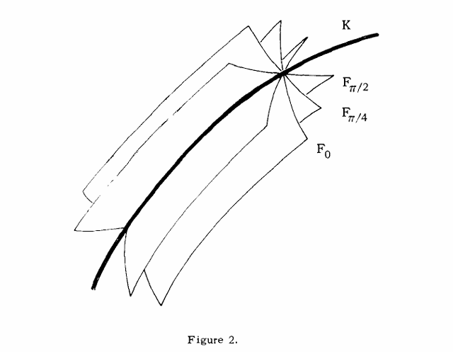

参考：Singular points of complex hypersurfaces, John Milnor, 1968. Chapter I
封面：https://www.pixiv.net/artworks/136899015
设 f(z1,z2,…,zn+1) 是非常值的复多项式函数，V 是由所有 n+1 元组
z=(z1,z2,…,zn+1)∈Cn+1
满足 f(z)=0 构成的代数集，这样的集合称为一个复超曲面。我们希望研究 V 在一些点 z0 的局部拓扑结构。
我们将采用如下结构。将超曲面 V 和 z0 的一个开球面 Sε 相交，那么 V 由 Sε 限制（以 Sε 为边界）的部分的拓扑和边界 K=V∩Sε 的拓扑密切相关。（可以参见 2.10 和 2.11）
大概说的是，奇点邻域 V∩Bε 的拓扑类型由边界 K=V∩Sε 的拓扑类型决定。
比如说，如果 z0 是 f 的一个正则点（即 Jacobian 矩阵在 z0 处不消失），那么 V 在 z0 的附近是 2n 维实流形。而边界 K 是 2n−1 维实流形，微分同胚于 2n−1 维球面 S2n−1，并且 K 以不打结的方式嵌入到 2n+1 维球面 Sε 中。
作为对比，考虑多项式
f(z1,z2)=z1p+z2q
是二元多项式，它在原点处有一个临界点，即 ∂f/∂z1=∂f/∂z2=0。假设 p,q 是互素、大于 1 的整数。Brauner 有一个断言，说集合 V=f−1(0) 和以原点为圆心的球面 Sε 的交 K=V∩Sε 是一个在 3 维球面 Sε 中被称为 (p,q)- 环面纽结 的纽结圆周。
Proof. 容易验证 K 位于所有满足 ∣z1∣=ξ,∣z2∣=η 的 (z1,z2) 所构成的环面上，其中 ξ,η>0 是正常数，并且
ξp=ηq;ξ2+η2=ε2
上面解决了模长条件，下面解决角度条件。所以可以解出来，K 就是由所有形如以下形式的点对构成的集合
(ξeqiθ,ηepiθ+ni/q),θ∈[0,2π)
因此，K 在环面的一个坐标方向上环绕 q 次，在另一个坐标方向上环绕 p 次。QED.
例如，当 p=2,q=3 时，K 是 (2,3)- 环面纽结，也就是著名的三叶结。在环面 S1×S1 的大圆上绕 2 圈，小圆上绕 3 圈所形成的闭合纽结。如图 1 所示。

通过更复杂的多项式，我们可以构造更复杂的纽结，这个在第 10、11 章会介绍。
Brieskorn 已经研究了这些纽结的高维类比。比如设 V(3,2,2,…,2) 是 Cn+1 中由方程
z13+z22+z32+⋯+zn+12=0
那么对于所有奇数值的 n，该超曲面和 Sε 相交成为一个光滑流形 K，该流形同胚于球面 S2n−1。在某些情况下，例如当 n=3 时，K 微分同胚于标准的 2n−1 维球面；而在其他情况下，例如当 n=5 时，K 是一个 “奇异” 的球面。但在所有情况下，K 都以一种打结的方式嵌入在 2n+1 维球面 Sε 中。
这些 Brieskorn 球面会在第 9 章中进一步讨论。
本书的目标是引入一种纤维化方法，该方法对于描述此类交集
K=V∩Sε⊆Sε
的拓扑结构非常有用。
以下是一些主结果，将在第 4-7 章证明。
Theorem. 纤维化定理：如果 z0 是复超曲面 V=f−1(0) 上的任意一点，且 Sε 是一个以 z0 为圆心、半径足够小的球面，那么映射
ϕ(z)=f(z)/∣f(z)∣
是从 Sε∖K 到单位圆的一个光滑纤维丛的投影映射。每一根纤维
Fθ=ϕ−1(eiθ)⊆Sε∖K
都是一个光滑、可平行化的 2n 维流形。END.
如果多项式 f 在 z0 附近除 z0 自身外没有其他临界点（即 z0 是孤立的），那么我们可以给出一个更为精确的描述。
Theorem. 孤立纤维化定理：如果 z0 是 f 的一个孤立临界点，那么每根纤维 Fθ 都具有一个 n 维球面束 Sn∨Sn∨⋯∨Sn 的同伦型，其中该球面束中球面的数量（即 Fθ 的中间 Betti 数）严格为正。每根纤维都可以视为一个带边光滑紧流形的内部，即
Closure(Fθ)=Fθ∪K
其中公共边界 K 是一个 n−2 维连通流形。END.
因此，所有纤维 Fθ 都按照图 2 所示的方式围绕它们的共同边界 K 排列。当 n≥2 时，光滑流形 K 是连通的；当 n≥3 时，它是单连通的。

以下是后续内容的更详细纲要。第 2 章遵循 Whitney 方法，描述了实代数集的基本性质。第 3 章证明了关于实代数集上实解析曲线存在性的一个基本引理。所有后续证明都依赖于这个引理。基本的纤维化定理在第 4 章中证明。关于 K 和 Fθ 拓扑的进一步细节在第 5 章中得到。
接下来我们引入一个额外的假设：原点是 f 的一个孤立临界点。在此条件下，我们可以对纤维进行更为精确的描述，即第 6 章；并给出纤维的中间 Betti 数的精确计算公式，在第 7 章。随后，我们将利用一个具有整数系数的特定多项式 Δ(t) 来描述交集 K 的拓扑结构，该多项式推广了纽结的 Alexander 多项式，这将在第 8 章中进行。第 9 章描述了 Brieskorn 的示例，即那些在拓扑上是流形的奇异簇；第 10 章阐述了复曲线奇点的经典理论。最后，第 11 章将纤维化定理推广到某些实多项式系统，并以此为例，给出了 Hopf 纤维化的一个多项式描述。
正文最后有两个附录。